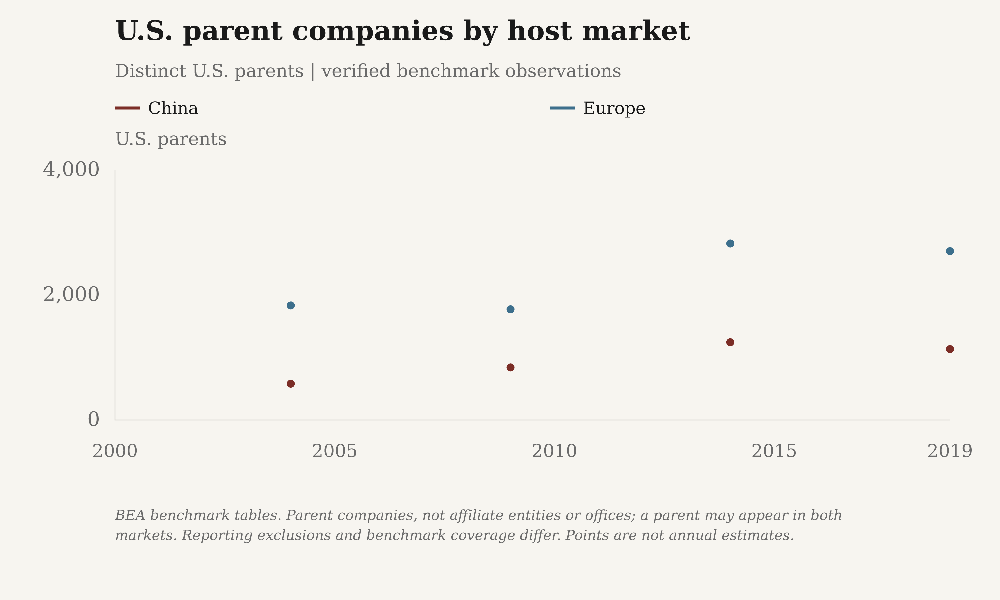
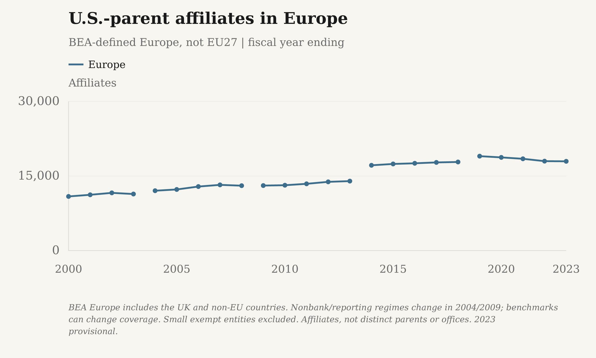
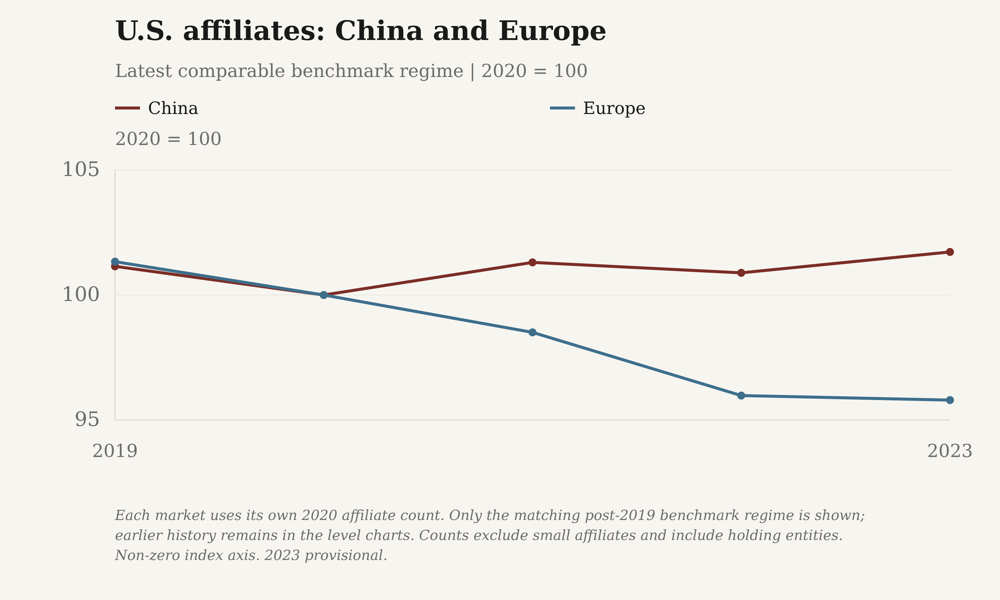
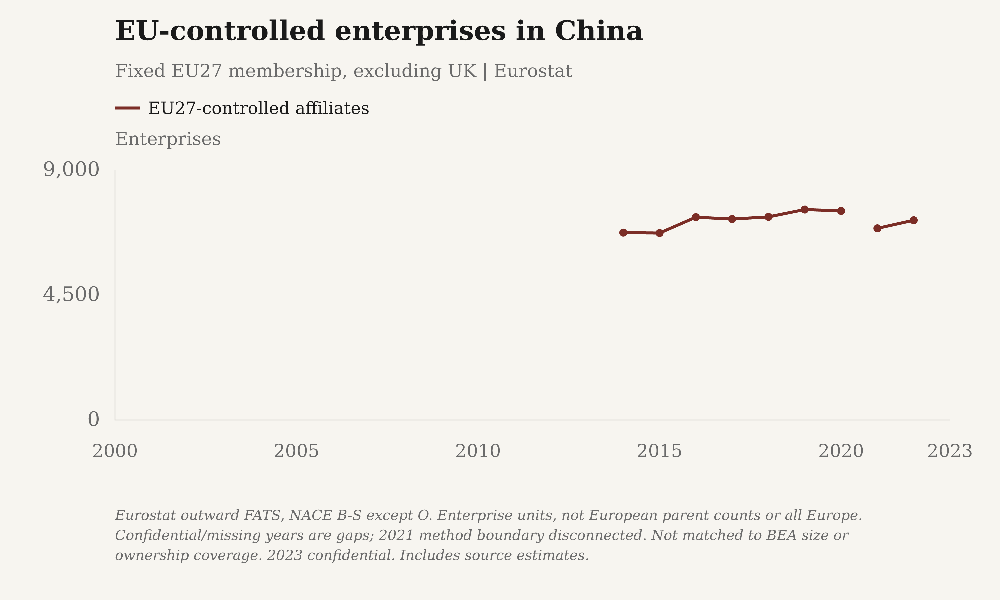

What the counts establish
Latest verified benchmark parent counts: China 1,134 in 2019; Europe 2,701 in 2019. The separate annual majority-owned affiliate counts are China 1,950 in 2023 and Europe 17,956 in 2023. Do not substitute one counting unit for the other.
As checked October 22, 2026, BEA's latest activity release covers 2023. The published schedule puts the 2024 activity release on November 20, 2026; no 2024 value is inferred.
Thresholds are nominal dollars, not inflation-adjusted. Apparent growth across survey benchmarks can reflect improved coverage. Benchmark parent observations remain isolated; annual affiliate lines break at the 2004, 2009, 2014 and 2019 regime boundaries. Eurostat changes methodology in 2021.
U.S. parent companies by host market

BEA benchmark tables. Parent companies, not affiliate entities or offices; a parent may appear in both markets. Reporting exclusions and benchmark coverage differ. Points are not annual estimates.
Download reported values as a high-resolution PNG or editable SVG:
- The Margin of Error: PNG (3000 × 1800) · SVG
- Substack: PNG (3000 × 1800) · SVG


Exact reported and plotted values
| Series | Year / ending year | Reported count | U.S. parents | Status | Source vintage |
|---|---|---|---|---|---|
| China | 2004 | 581 | 581.0000 | observed | Revised 2004 benchmark |
| China | 2009 | 841 | 841.0000 | observed | Revised 2009 benchmark |
| China | 2014 | 1,244 | 1,244.0000 | observed | Revised 2014 benchmark |
| China | 2019 | 1,134 | 1,134.0000 | observed | Revised 2019 benchmark |
| Europe | 2004 | 1,833 | 1,833.0000 | observed | Revised 2004 benchmark |
| Europe | 2009 | 1,771 | 1,771.0000 | observed | Revised 2009 benchmark |
| Europe | 2014 | 2,824 | 2,824.0000 | observed | Revised 2014 benchmark |
| Europe | 2019 | 2,701 | 2,701.0000 | observed | Revised 2019 benchmark |
U.S.-parent affiliates in China

BEA. Nonbank coverage before 2009; reporting cutoffs $7m through 2003, $10m in 2004-08, $25m from 2009. Benchmark boundaries disconnected. Entity counts include holding companies, not all firms or offices.
Download reported values as a high-resolution PNG or editable SVG:
- The Margin of Error: PNG (3000 × 1800) · SVG
- Substack: PNG (3000 × 1800) · SVG


Exact reported and plotted values
| Series | Year / ending year | Reported count | Affiliates | Status | Source vintage |
|---|---|---|---|---|---|
| China | 2000 | 458 | 458.0000 | observed | Revised 2000 operations; historical benchmark regime |
| China | 2001 | 492 | 492.0000 | observed | Revised 2001 operations; historical benchmark regime |
| China | 2002 | 509 | 509.0000 | observed | Revised 2002 operations; historical benchmark regime |
| China | 2003 | 510 | 510.0000 | observed | Revised 2003 operations; historical benchmark regime |
| China | 2004 | 652 | 652.0000 | observed | Revised 2004 operations; historical benchmark regime |
| China | 2005 | 692 | 692.0000 | observed | Revised 2005 operations; historical benchmark regime |
| China | 2006 | 762 | 762.0000 | observed | Revised 2006 operations; historical benchmark regime |
| China | 2007 | 832 | 832.0000 | observed | Revised 2007 operations; historical benchmark regime |
| China | 2008 | 845 | 845.0000 | observed | Revised 2008 operations; historical benchmark regime |
| China | 2009 | 1,016 | 1,016.0000 | observed | 2009-2023 selected-data workbook; 2009 fiscal year |
| China | 2010 | 1,052 | 1,052.0000 | observed | 2009-2023 selected-data workbook; 2010 fiscal year |
| China | 2011 | 1,091 | 1,091.0000 | observed | 2009-2023 selected-data workbook; 2011 fiscal year |
| China | 2012 | 1,124 | 1,124.0000 | observed | 2009-2023 selected-data workbook; 2012 fiscal year |
| China | 2013 | 1,161 | 1,161.0000 | observed | 2009-2023 selected-data workbook; 2013 fiscal year |
| China | 2014 | 1,561 | 1,561.0000 | observed | 2009-2023 selected-data workbook; 2014 fiscal year |
| China | 2015 | 1,610 | 1,610.0000 | observed | 2009-2023 selected-data workbook; 2015 fiscal year |
| China | 2016 | 1,665 | 1,665.0000 | observed | 2009-2023 selected-data workbook; 2016 fiscal year |
| China | 2017 | 1,720 | 1,720.0000 | observed | 2009-2023 selected-data workbook; 2017 fiscal year |
| China | 2018 | 1,737 | 1,737.0000 | observed | 2009-2023 selected-data workbook; 2018 fiscal year |
| China | 2019 | 1,939 | 1,939.0000 | observed | 2009-2023 selected-data workbook; 2019 fiscal year |
| China | 2020 | 1,917 | 1,917.0000 | observed | 2009-2023 selected-data workbook; 2020 fiscal year |
| China | 2021 | 1,942 | 1,942.0000 | observed | 2009-2023 selected-data workbook; 2021 fiscal year |
| China | 2022 | 1,934 | 1,934.0000 | observed | 2009-2023 selected-data workbook; 2022 fiscal year |
| China | 2023 | 1,950 | 1,950.0000 | provisional | 2009-2023 selected-data workbook; 2023 fiscal year |
U.S.-parent affiliates in Europe

BEA Europe includes the UK and non-EU countries. Nonbank/reporting regimes change in 2004/2009; benchmarks can change coverage. Small exempt entities excluded. Affiliates, not distinct parents or offices.
Download reported values as a high-resolution PNG or editable SVG:
- The Margin of Error: PNG (3000 × 1800) · SVG
- Substack: PNG (3000 × 1800) · SVG


Exact reported and plotted values
| Series | Year / ending year | Reported count | Affiliates | Status | Source vintage |
|---|---|---|---|---|---|
| Europe | 2000 | 10,893 | 10,893.0000 | observed | Revised 2000 operations; historical benchmark regime |
| Europe | 2001 | 11,224 | 11,224.0000 | observed | Revised 2001 operations; historical benchmark regime |
| Europe | 2002 | 11,612 | 11,612.0000 | observed | Revised 2002 operations; historical benchmark regime |
| Europe | 2003 | 11,380 | 11,380.0000 | observed | Revised 2003 operations; historical benchmark regime |
| Europe | 2004 | 12,045 | 12,045.0000 | observed | Revised 2004 operations; historical benchmark regime |
| Europe | 2005 | 12,296 | 12,296.0000 | observed | Revised 2005 operations; historical benchmark regime |
| Europe | 2006 | 12,881 | 12,881.0000 | observed | Revised 2006 operations; historical benchmark regime |
| Europe | 2007 | 13,220 | 13,220.0000 | observed | Revised 2007 operations; historical benchmark regime |
| Europe | 2008 | 13,057 | 13,057.0000 | observed | Revised 2008 operations; historical benchmark regime |
| Europe | 2009 | 13,080 | 13,080.0000 | observed | 2009-2023 selected-data workbook; 2009 fiscal year |
| Europe | 2010 | 13,148 | 13,148.0000 | observed | 2009-2023 selected-data workbook; 2010 fiscal year |
| Europe | 2011 | 13,431 | 13,431.0000 | observed | 2009-2023 selected-data workbook; 2011 fiscal year |
| Europe | 2012 | 13,827 | 13,827.0000 | observed | 2009-2023 selected-data workbook; 2012 fiscal year |
| Europe | 2013 | 13,976 | 13,976.0000 | observed | 2009-2023 selected-data workbook; 2013 fiscal year |
| Europe | 2014 | 17,157 | 17,157.0000 | observed | 2009-2023 selected-data workbook; 2014 fiscal year |
| Europe | 2015 | 17,426 | 17,426.0000 | observed | 2009-2023 selected-data workbook; 2015 fiscal year |
| Europe | 2016 | 17,558 | 17,558.0000 | observed | 2009-2023 selected-data workbook; 2016 fiscal year |
| Europe | 2017 | 17,734 | 17,734.0000 | observed | 2009-2023 selected-data workbook; 2017 fiscal year |
| Europe | 2018 | 17,823 | 17,823.0000 | observed | 2009-2023 selected-data workbook; 2018 fiscal year |
| Europe | 2019 | 18,994 | 18,994.0000 | observed | 2009-2023 selected-data workbook; 2019 fiscal year |
| Europe | 2020 | 18,744 | 18,744.0000 | observed | 2009-2023 selected-data workbook; 2020 fiscal year |
| Europe | 2021 | 18,464 | 18,464.0000 | observed | 2009-2023 selected-data workbook; 2021 fiscal year |
| Europe | 2022 | 17,990 | 17,990.0000 | observed | 2009-2023 selected-data workbook; 2022 fiscal year |
| Europe | 2023 | 17,956 | 17,956.0000 | provisional | 2009-2023 selected-data workbook; 2023 fiscal year |
U.S. affiliates: China and Europe

Each market uses its own 2020 affiliate count. Only the matching post-2019 benchmark regime is shown; earlier history remains in the level charts. Counts exclude small affiliates and include holding entities.
Download reported values as a high-resolution PNG or editable SVG:
- The Margin of Error: PNG (3000 × 1800) · SVG
- Substack: PNG (3000 × 1800) · SVG


Exact reported and plotted values
| Series | Year / ending year | Reported count | 2020 = 100 | Status | Source vintage |
|---|---|---|---|---|---|
| China | 2019 | 1,939 | 101.1476 | observed | 2009-2023 selected-data workbook; 2019 fiscal year |
| China | 2020 | 1,917 | 100.0000 | observed | 2009-2023 selected-data workbook; 2020 fiscal year |
| China | 2021 | 1,942 | 101.3041 | observed | 2009-2023 selected-data workbook; 2021 fiscal year |
| China | 2022 | 1,934 | 100.8868 | observed | 2009-2023 selected-data workbook; 2022 fiscal year |
| China | 2023 | 1,950 | 101.7214 | provisional | 2009-2023 selected-data workbook; 2023 fiscal year |
| Europe | 2019 | 18,994 | 101.3338 | observed | 2009-2023 selected-data workbook; 2019 fiscal year |
| Europe | 2020 | 18,744 | 100.0000 | observed | 2009-2023 selected-data workbook; 2020 fiscal year |
| Europe | 2021 | 18,464 | 98.5062 | observed | 2009-2023 selected-data workbook; 2021 fiscal year |
| Europe | 2022 | 17,990 | 95.9774 | observed | 2009-2023 selected-data workbook; 2022 fiscal year |
| Europe | 2023 | 17,956 | 95.7960 | provisional | 2009-2023 selected-data workbook; 2023 fiscal year |
EU-controlled enterprises in China

Eurostat outward FATS, NACE B-S except O. Enterprise units, not European parent counts or all Europe. Confidential/missing years are gaps; 2021 method boundary disconnected. Not matched to BEA size or ownership coverage.
Download reported values as a high-resolution PNG or editable SVG:
- The Margin of Error: PNG (3000 × 1800) · SVG
- Substack: PNG (3000 × 1800) · SVG


Exact reported and plotted values
| Series | Year / ending year | Reported count | Enterprises | Status | Source vintage |
|---|---|---|---|---|---|
| EU27-controlled affiliates | 2014 | 6,746 | 6,746.0000 | observed | Outward FATS, main variables - NACE Rev. 2 activity (2010-2020); updated 2024-04-25T11:00:00+0200 |
| EU27-controlled affiliates | 2015 | 6,731 | 6,731.0000 | observed | Outward FATS, main variables - NACE Rev. 2 activity (2010-2020); updated 2024-04-25T11:00:00+0200 |
| EU27-controlled affiliates | 2016 | 7,301 | 7,301.0000 | observed | Outward FATS, main variables - NACE Rev. 2 activity (2010-2020); updated 2024-04-25T11:00:00+0200 |
| EU27-controlled affiliates | 2017 | 7,234 | 7,234.0000 | observed | Outward FATS, main variables - NACE Rev. 2 activity (2010-2020); updated 2024-04-25T11:00:00+0200 |
| EU27-controlled affiliates | 2018 | 7,312 | 7,312.0000 | observed | Outward FATS, main variables - NACE Rev. 2 activity (2010-2020); updated 2024-04-25T11:00:00+0200 |
| EU27-controlled affiliates | 2019 | 7,577 | 7,577.0000 | observed | Outward FATS, main variables - NACE Rev. 2 activity (2010-2020); updated 2024-04-25T11:00:00+0200 |
| EU27-controlled affiliates | 2020 | 7,528 | 7,528.0000 | observed | Outward FATS, main variables - NACE Rev. 2 activity (2010-2020); updated 2024-04-25T11:00:00+0200 |
| EU27-controlled affiliates | 2021 | 6,900 | 6,900.0000 | estimated | Foreign affiliates of the EU enterprises by detailed breakdown of country of the affiliates (from 2021 onwards); updated 2026-03-31T23:00:00+0200 |
| EU27-controlled affiliates | 2022 | 7,191 | 7,191.0000 | observed | Foreign affiliates of the EU enterprises by detailed breakdown of country of the affiliates (from 2021 onwards); updated 2026-03-31T23:00:00+0200 |
Coverage and unresolved counts
| Indicator | Status | Definition |
|---|---|---|
| unique us parents | benchmarks_only | Verified 2004, 2009, 2014 and 2019 host-country parent counts. No annual company census verified; do not fill later years with affiliate counts. |
| us affiliates | available | 2000-2023 for mainland China and BEA-defined Europe. Nonbank/reporting thresholds and benchmark coverage create explicit breaks. |
| eu affiliates | partial | Fixed EU27, not all Europe; available years: 2014, 2015, 2016, 2017, 2018, 2019, 2020, 2021, 2022; confidential: 2013, 2023; unavailable: 2010, 2011, 2012. Confidential and unavailable cells remain null. The 2021 methodology boundary is disconnected. |
Primary sources
Publish aggregate statistics and original charts only; raw workbooks and reports remain local. Sources and retrieval checksums accompany every observation.
Sources, vintages and checksums
- U.S. Bureau of Economic Analysis - Revised 2000 operations; historical benchmark regime. Table III.A1, Number of affiliates; Tab3A1a.xls, Tab3A1b.xls, Tab3A1c.xls. Majority-owned nonbank affiliates; benchmark-exempt entities excluded. Not comparable across the 2004 reporting-regime or 2009 banking/threshold changes.
- Primary source; retrieved 2026-10-22T17:18:15+00:00; SHA-256
b0f6941375b2835a1118c45b656c3077ce2079e3ff64dddd9a2449c1c530dd87
- Primary source; retrieved 2026-10-22T17:18:15+00:00; SHA-256
- U.S. Bureau of Economic Analysis - Revised 2001 operations; historical benchmark regime. Table III.A1, Number of affiliates; Tab3A1a.xls, Tab3A1b.xls, Tab3A1c.xls. Majority-owned nonbank affiliates; benchmark-exempt entities excluded. Not comparable across the 2004 reporting-regime or 2009 banking/threshold changes.
- Primary source; retrieved 2026-10-22T17:31:29+00:00; SHA-256
998bf6a7bea11a24a16922a7cf7976c268bae865d58732540faf561a2d66cb60
- Primary source; retrieved 2026-10-22T17:31:29+00:00; SHA-256
- U.S. Bureau of Economic Analysis - Revised 2002 operations; historical benchmark regime. Table III.A1, Number of affiliates; Tab3A1a.xls, Tab3A1b.xls, Tab3A1c.xls. Majority-owned nonbank affiliates; benchmark-exempt entities excluded. Not comparable across the 2004 reporting-regime or 2009 banking/threshold changes.
- Primary source; retrieved 2026-10-22T17:31:30+00:00; SHA-256
91889ad263d8ccda73c3ea72f35debb870041a89e118e531d9520ffd14b4da2e
- Primary source; retrieved 2026-10-22T17:31:30+00:00; SHA-256
- U.S. Bureau of Economic Analysis - Revised 2003 operations; historical benchmark regime. Table III.A1, Number of affiliates; Tab3A1a.xls, Tab3A1b.xls, Tab3A1c.xls. Majority-owned nonbank affiliates; benchmark-exempt entities excluded. Not comparable across the 2004 reporting-regime or 2009 banking/threshold changes.
- Primary source; retrieved 2026-10-22T17:31:31+00:00; SHA-256
c8004aabebfd9a14ac88881abd91203796d6a80399ee49f70d8bdb8150a6bd7b
- Primary source; retrieved 2026-10-22T17:31:31+00:00; SHA-256
- U.S. Bureau of Economic Analysis - Revised 2004 operations; historical benchmark regime. Table III.A1, Number of affiliates; Tab3A1.xls. Majority-owned nonbank affiliates; benchmark-exempt entities excluded. Not comparable across the 2004 reporting-regime or 2009 banking/threshold changes.
- Primary source; retrieved 2026-10-22T17:18:51+00:00; SHA-256
da9e5b9c8c584a7dfabe5554f58dcd82c60e5b217386e3119540e92413f2534e
- Primary source; retrieved 2026-10-22T17:18:51+00:00; SHA-256
- U.S. Bureau of Economic Analysis - Revised 2005 operations; historical benchmark regime. Table III.A1, Number of affiliates; Tab3A1.xls. Majority-owned nonbank affiliates; benchmark-exempt entities excluded. Not comparable across the 2004 reporting-regime or 2009 banking/threshold changes.
- Primary source; retrieved 2026-10-22T17:31:32+00:00; SHA-256
99bd6967002a6cda40b9f31c96f1648ed326f6eba6232a247a4dde01b1b80e28
- Primary source; retrieved 2026-10-22T17:31:32+00:00; SHA-256
- U.S. Bureau of Economic Analysis - Revised 2006 operations; historical benchmark regime. Table III.A1, Number of affiliates; Tab3A1.xls. Majority-owned nonbank affiliates; benchmark-exempt entities excluded. Not comparable across the 2004 reporting-regime or 2009 banking/threshold changes.
- Primary source; retrieved 2026-10-22T17:31:33+00:00; SHA-256
91a0fefc732501212893ee3f2c5d72f40ca1441fa12332cfa0c78ec3ddc716a6
- Primary source; retrieved 2026-10-22T17:31:33+00:00; SHA-256
- U.S. Bureau of Economic Analysis - Revised 2007 operations; historical benchmark regime. Table III.A1, Number of affiliates; Tab3A1_new.xls. Majority-owned nonbank affiliates; benchmark-exempt entities excluded. Not comparable across the 2004 reporting-regime or 2009 banking/threshold changes.
- Primary source; retrieved 2026-10-22T17:31:34+00:00; SHA-256
aac8163ebe0da50bd577d5ccc2ee512356563978e55f40c74ec6081617f4ffb4
- Primary source; retrieved 2026-10-22T17:31:34+00:00; SHA-256
- U.S. Bureau of Economic Analysis - Revised 2008 operations; historical benchmark regime. Table III.A1, Number of affiliates; Tab3A1.xls. Majority-owned nonbank affiliates; benchmark-exempt entities excluded. Not comparable across the 2004 reporting-regime or 2009 banking/threshold changes.
- Primary source; retrieved 2026-10-22T17:18:52+00:00; SHA-256
aa27a0aca8db1e52e555620518df657137a2bc899662c0f53a29cae597b8eb32
- Primary source; retrieved 2026-10-22T17:18:52+00:00; SHA-256
- U.S. Bureau of Economic Analysis - 2009-2023 selected-data workbook; 2009 fiscal year. Sheet 2009; China/Europe rows; Number of affiliates above $25m. Majority-owned affiliates across all industries. Assets, sales or net income/loss must exceed $25m. Not all small businesses or physical offices; includes holding entities. 2014 and 2019 benchmarks can change coverage: their boundaries are not connected.
- Primary source; retrieved 2026-10-22T17:17:32+00:00; SHA-256
21ea3cc97b7b1df20c767b200202e7e20f1aa5968cd9f2e3113e893a511b688b
- Primary source; retrieved 2026-10-22T17:17:32+00:00; SHA-256
- U.S. Bureau of Economic Analysis - 2009-2023 selected-data workbook; 2010 fiscal year. Sheet 2010; China/Europe rows; Number of affiliates above $25m. Majority-owned affiliates across all industries. Assets, sales or net income/loss must exceed $25m. Not all small businesses or physical offices; includes holding entities. 2014 and 2019 benchmarks can change coverage: their boundaries are not connected.
- Primary source; retrieved 2026-10-22T17:17:32+00:00; SHA-256
21ea3cc97b7b1df20c767b200202e7e20f1aa5968cd9f2e3113e893a511b688b
- Primary source; retrieved 2026-10-22T17:17:32+00:00; SHA-256
- U.S. Bureau of Economic Analysis - 2009-2023 selected-data workbook; 2011 fiscal year. Sheet 2011; China/Europe rows; Number of affiliates above $25m. Majority-owned affiliates across all industries. Assets, sales or net income/loss must exceed $25m. Not all small businesses or physical offices; includes holding entities. 2014 and 2019 benchmarks can change coverage: their boundaries are not connected.
- Primary source; retrieved 2026-10-22T17:17:32+00:00; SHA-256
21ea3cc97b7b1df20c767b200202e7e20f1aa5968cd9f2e3113e893a511b688b
- Primary source; retrieved 2026-10-22T17:17:32+00:00; SHA-256
- U.S. Bureau of Economic Analysis - 2009-2023 selected-data workbook; 2012 fiscal year. Sheet 2012; China/Europe rows; Number of affiliates above $25m. Majority-owned affiliates across all industries. Assets, sales or net income/loss must exceed $25m. Not all small businesses or physical offices; includes holding entities. 2014 and 2019 benchmarks can change coverage: their boundaries are not connected.
- Primary source; retrieved 2026-10-22T17:17:32+00:00; SHA-256
21ea3cc97b7b1df20c767b200202e7e20f1aa5968cd9f2e3113e893a511b688b
- Primary source; retrieved 2026-10-22T17:17:32+00:00; SHA-256
- U.S. Bureau of Economic Analysis - 2009-2023 selected-data workbook; 2013 fiscal year. Sheet 2013; China/Europe rows; Number of affiliates above $25m. Majority-owned affiliates across all industries. Assets, sales or net income/loss must exceed $25m. Not all small businesses or physical offices; includes holding entities. 2014 and 2019 benchmarks can change coverage: their boundaries are not connected.
- Primary source; retrieved 2026-10-22T17:17:32+00:00; SHA-256
21ea3cc97b7b1df20c767b200202e7e20f1aa5968cd9f2e3113e893a511b688b
- Primary source; retrieved 2026-10-22T17:17:32+00:00; SHA-256
- U.S. Bureau of Economic Analysis - 2009-2023 selected-data workbook; 2014 fiscal year. Sheet 2014; China/Europe rows; Number of affiliates above $25m. Majority-owned affiliates across all industries. Assets, sales or net income/loss must exceed $25m. Not all small businesses or physical offices; includes holding entities. 2014 and 2019 benchmarks can change coverage: their boundaries are not connected.
- Primary source; retrieved 2026-10-22T17:17:32+00:00; SHA-256
21ea3cc97b7b1df20c767b200202e7e20f1aa5968cd9f2e3113e893a511b688b
- Primary source; retrieved 2026-10-22T17:17:32+00:00; SHA-256
- U.S. Bureau of Economic Analysis - 2009-2023 selected-data workbook; 2015 fiscal year. Sheet 2015; China/Europe rows; Number of affiliates above $25m. Majority-owned affiliates across all industries. Assets, sales or net income/loss must exceed $25m. Not all small businesses or physical offices; includes holding entities. 2014 and 2019 benchmarks can change coverage: their boundaries are not connected.
- Primary source; retrieved 2026-10-22T17:17:32+00:00; SHA-256
21ea3cc97b7b1df20c767b200202e7e20f1aa5968cd9f2e3113e893a511b688b
- Primary source; retrieved 2026-10-22T17:17:32+00:00; SHA-256
- U.S. Bureau of Economic Analysis - 2009-2023 selected-data workbook; 2016 fiscal year. Sheet 2016; China/Europe rows; Number of affiliates above $25m. Majority-owned affiliates across all industries. Assets, sales or net income/loss must exceed $25m. Not all small businesses or physical offices; includes holding entities. 2014 and 2019 benchmarks can change coverage: their boundaries are not connected.
- Primary source; retrieved 2026-10-22T17:17:32+00:00; SHA-256
21ea3cc97b7b1df20c767b200202e7e20f1aa5968cd9f2e3113e893a511b688b
- Primary source; retrieved 2026-10-22T17:17:32+00:00; SHA-256
- U.S. Bureau of Economic Analysis - 2009-2023 selected-data workbook; 2017 fiscal year. Sheet 2017; China/Europe rows; Number of affiliates above $25m. Majority-owned affiliates across all industries. Assets, sales or net income/loss must exceed $25m. Not all small businesses or physical offices; includes holding entities. 2014 and 2019 benchmarks can change coverage: their boundaries are not connected.
- Primary source; retrieved 2026-10-22T17:17:32+00:00; SHA-256
21ea3cc97b7b1df20c767b200202e7e20f1aa5968cd9f2e3113e893a511b688b
- Primary source; retrieved 2026-10-22T17:17:32+00:00; SHA-256
- U.S. Bureau of Economic Analysis - 2009-2023 selected-data workbook; 2018 fiscal year. Sheet 2018; China/Europe rows; Number of affiliates above $25m. Majority-owned affiliates across all industries. Assets, sales or net income/loss must exceed $25m. Not all small businesses or physical offices; includes holding entities. 2014 and 2019 benchmarks can change coverage: their boundaries are not connected.
- Primary source; retrieved 2026-10-22T17:17:32+00:00; SHA-256
21ea3cc97b7b1df20c767b200202e7e20f1aa5968cd9f2e3113e893a511b688b
- Primary source; retrieved 2026-10-22T17:17:32+00:00; SHA-256
- U.S. Bureau of Economic Analysis - 2009-2023 selected-data workbook; 2019 fiscal year. Sheet 2019; China/Europe rows; Number of affiliates above $25m. Majority-owned affiliates across all industries. Assets, sales or net income/loss must exceed $25m. Not all small businesses or physical offices; includes holding entities. 2014 and 2019 benchmarks can change coverage: their boundaries are not connected.
- Primary source; retrieved 2026-10-22T17:17:32+00:00; SHA-256
21ea3cc97b7b1df20c767b200202e7e20f1aa5968cd9f2e3113e893a511b688b
- Primary source; retrieved 2026-10-22T17:17:32+00:00; SHA-256
- U.S. Bureau of Economic Analysis - 2009-2023 selected-data workbook; 2020 fiscal year. Sheet 2020; China/Europe rows; Number of affiliates above $25m. Majority-owned affiliates across all industries. Assets, sales or net income/loss must exceed $25m. Not all small businesses or physical offices; includes holding entities. 2014 and 2019 benchmarks can change coverage: their boundaries are not connected.
- Primary source; retrieved 2026-10-22T17:17:32+00:00; SHA-256
21ea3cc97b7b1df20c767b200202e7e20f1aa5968cd9f2e3113e893a511b688b
- Primary source; retrieved 2026-10-22T17:17:32+00:00; SHA-256
- U.S. Bureau of Economic Analysis - 2009-2023 selected-data workbook; 2021 fiscal year. Sheet 2021; China/Europe rows; Number of affiliates above $25m. Majority-owned affiliates across all industries. Assets, sales or net income/loss must exceed $25m. Not all small businesses or physical offices; includes holding entities. 2014 and 2019 benchmarks can change coverage: their boundaries are not connected.
- Primary source; retrieved 2026-10-22T17:17:32+00:00; SHA-256
21ea3cc97b7b1df20c767b200202e7e20f1aa5968cd9f2e3113e893a511b688b
- Primary source; retrieved 2026-10-22T17:17:32+00:00; SHA-256
- U.S. Bureau of Economic Analysis - 2009-2023 selected-data workbook; 2022 fiscal year. Sheet 2022; China/Europe rows; Number of affiliates above $25m. Majority-owned affiliates across all industries. Assets, sales or net income/loss must exceed $25m. Not all small businesses or physical offices; includes holding entities. 2014 and 2019 benchmarks can change coverage: their boundaries are not connected.
- Primary source; retrieved 2026-10-22T17:17:32+00:00; SHA-256
21ea3cc97b7b1df20c767b200202e7e20f1aa5968cd9f2e3113e893a511b688b
- Primary source; retrieved 2026-10-22T17:17:32+00:00; SHA-256
- U.S. Bureau of Economic Analysis - 2009-2023 selected-data workbook; 2023 fiscal year. Sheet 2023; China/Europe rows; Number of affiliates above $25m. Majority-owned affiliates across all industries. Assets, sales or net income/loss must exceed $25m. Not all small businesses or physical offices; includes holding entities. 2014 and 2019 benchmarks can change coverage: their boundaries are not connected.
- Primary source; retrieved 2026-10-22T17:17:32+00:00; SHA-256
21ea3cc97b7b1df20c767b200202e7e20f1aa5968cd9f2e3113e893a511b688b
- Primary source; retrieved 2026-10-22T17:17:32+00:00; SHA-256
- BEA - Reviewed source definitions. Definitions and source coverage.
- Primary source; retrieved 2026-10-22T17:33:24+00:00; SHA-256
fa7f09afee55328f4161ca08e0cedb0865b76028750fdc1a1cef8307d18cb900
- Primary source; retrieved 2026-10-22T17:33:24+00:00; SHA-256
- BEA - Reviewed source definitions. Definitions and source coverage.
- Primary source; retrieved 2026-10-22T17:33:24+00:00; SHA-256
a8c1b95c494a9d82eb5fa778f6c174cef612c5af66c760ae5f04b3f4e6564f94
- Primary source; retrieved 2026-10-22T17:33:24+00:00; SHA-256
- U.S. Bureau of Economic Analysis - Revised 2004 benchmark. Tab1M2.xls; Table I.M2; All industries. U.S. parents counted once in each country where they have affiliates. Reporting exclusions apply; the 2004 benchmark changed the affiliate reporting cutoff from $7m to $10m.
- Primary source; retrieved 2026-10-22T17:18:51+00:00; SHA-256
da9e5b9c8c584a7dfabe5554f58dcd82c60e5b217386e3119540e92413f2534e
- Primary source; retrieved 2026-10-22T17:18:51+00:00; SHA-256
- U.S. Bureau of Economic Analysis - Revised 2009 benchmark. Table I.K2; Number of U.S. parents; country rows, All industries. Unique within each host region, not across regions; includes parents with minority-owned affiliates. Benchmark reporting exclusions and coverage apply; these points are not an annual series.
- Primary source; retrieved 2026-10-22T17:22:52+00:00; SHA-256
4256878ed173f35818d332bb711c566e670c3fa097ad2cd71eb0d9ba6cdeefe2
- Primary source; retrieved 2026-10-22T17:22:52+00:00; SHA-256
- U.S. Bureau of Economic Analysis - Revised 2014 benchmark. Table I.K2; Number of U.S. parents; country rows, All industries. Unique within each host region, not across regions; includes parents with minority-owned affiliates. Benchmark reporting exclusions and coverage apply; these points are not an annual series.
- Primary source; retrieved 2026-10-22T17:20:44+00:00; SHA-256
9c03733b67bf7e239bc82a362735132e50506f93b9350beaaf70a2186e5f3427
- Primary source; retrieved 2026-10-22T17:20:44+00:00; SHA-256
- U.S. Bureau of Economic Analysis - Revised 2019 benchmark. Table I.K2; Number of U.S. parents; country rows, All industries. Unique within each host region, not across regions; includes parents with minority-owned affiliates. Benchmark reporting exclusions and coverage apply; these points are not an annual series.
- Primary source; retrieved 2026-10-22T17:20:43+00:00; SHA-256
e0a7848bb2b0508de7d470ae443070fa02acec4f04eb96f54e55a568d06ec214
- Primary source; retrieved 2026-10-22T17:20:43+00:00; SHA-256
- BEA - Reviewed source definitions. Definitions and source coverage.
- Primary source; retrieved 2026-10-22T17:44:55+00:00; SHA-256
ce59a996459d29a1b1e51d679384689ab623db9524ddf96ab1354a556d5470c6
- Primary source; retrieved 2026-10-22T17:44:55+00:00; SHA-256
- Eurostat - Reviewed source definitions. Definitions and source coverage.
- Primary source; retrieved 2026-10-22T17:33:26+00:00; SHA-256
a3b2072ccf7e2d2c51782be84caf99a1fb28058a36b8ffbe1643bd8676a740a7
- Primary source; retrieved 2026-10-22T17:33:26+00:00; SHA-256
- Eurostat - Outward FATS, main variables - NACE Rev. 2 activity (2010-2020); updated 2024-04-25T11:00:00+0200. A; EU27_2020; CN_X_HK; B-S_X_O; indic_bp=ENT. Fixed EU27 membership. Preserve estimated, break and confidential flags. Legacy 2010-2020 and post-2021 EBS series remain disconnected. No reconstruction of confidential totals from member-country values.
- Primary source; retrieved 2026-10-22T17:19:30+00:00; SHA-256
5863dc8cac7b7d414ebc0800ab815047b41ddab783e3316c691d7f72dd2ea7c1
- Primary source; retrieved 2026-10-22T17:19:30+00:00; SHA-256
- Eurostat - Foreign affiliates of the EU enterprises by detailed breakdown of country of the affiliates (from 2021 onwards); updated 2026-03-31T23:00:00+0200. A; EU27_2020; CN_X_HK; B-S_X_O; indic_sbs=ENT_NR. Fixed EU27 membership. Preserve estimated, break and confidential flags. Legacy 2010-2020 and post-2021 EBS series remain disconnected. No reconstruction of confidential totals from member-country values.
- Primary source; retrieved 2026-10-22T17:18:15+00:00; SHA-256
5e89fbd072e664351b26df439b46ebdc2c1e787fe6025944ccd8f32569ac17dd
- Primary source; retrieved 2026-10-22T17:18:15+00:00; SHA-256